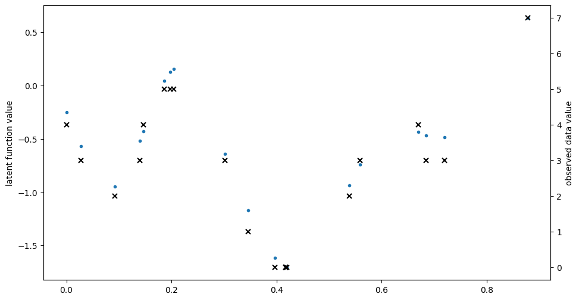

Ordinal regression#
Ordinal regression aims to fit a model to some data \((X, Y)\), where \(Y\) is an ordinal variable. To do so, we use a VPG model with a specific likelihood (gpflow.likelihoods.Ordinal).
[1]:
import gpflow
import tensorflow as tf
import numpy as np
import matplotlib.pyplot as plt
%matplotlib inline
plt.rcParams["figure.figsize"] = (12, 6)
np.random.seed(123) # for reproducibility
2022-04-01 15:29:50.159280: W tensorflow/stream_executor/platform/default/dso_loader.cc:64] Could not load dynamic library 'libcudart.so.11.0'; dlerror: libcudart.so.11.0: cannot open shared object file: No such file or directory
2022-04-01 15:29:50.159314: I tensorflow/stream_executor/cuda/cudart_stub.cc:29] Ignore above cudart dlerror if you do not have a GPU set up on your machine.
[2]:
# make a one-dimensional ordinal regression problem
# This function generates a set of inputs X,
# quantitative output f (latent) and ordinal values Y
def generate_data(num_data):
# First generate random inputs
X = np.random.rand(num_data, 1)
# Now generate values of a latent GP
kern = gpflow.kernels.SquaredExponential(lengthscales=0.1)
K = kern(X)
f = np.random.multivariate_normal(mean=np.zeros(num_data), cov=K).reshape(-1, 1)
# Finally convert f values into ordinal values Y
Y = np.round((f + f.min()) * 3)
Y = Y - Y.min()
Y = np.asarray(Y, np.float64)
return X, f, Y
np.random.seed(1)
num_data = 20
X, f, Y = generate_data(num_data)
plt.figure(figsize=(11, 6))
plt.plot(X, f, ".")
plt.ylabel("latent function value")
plt.twinx()
plt.plot(X, Y, "kx", mew=1.5)
plt.ylabel("observed data value")
2022-04-01 15:29:53.245171: W tensorflow/stream_executor/platform/default/dso_loader.cc:64] Could not load dynamic library 'libcuda.so.1'; dlerror: libcuda.so.1: cannot open shared object file: No such file or directory
2022-04-01 15:29:53.245205: W tensorflow/stream_executor/cuda/cuda_driver.cc:269] failed call to cuInit: UNKNOWN ERROR (303)
2022-04-01 15:29:53.245223: I tensorflow/stream_executor/cuda/cuda_diagnostics.cc:156] kernel driver does not appear to be running on this host (3ba97d400bcb): /proc/driver/nvidia/version does not exist
2022-04-01 15:29:53.245500: I tensorflow/core/platform/cpu_feature_guard.cc:151] This TensorFlow binary is optimized with oneAPI Deep Neural Network Library (oneDNN) to use the following CPU instructions in performance-critical operations: AVX2 AVX512F FMA
To enable them in other operations, rebuild TensorFlow with the appropriate compiler flags.
[2]:
Text(0, 0.5, 'observed data value')

[3]:
# construct ordinal likelihood - bin_edges is the same as unique(Y) but centered
bin_edges = np.array(np.arange(np.unique(Y).size + 1), dtype=float)
bin_edges = bin_edges - bin_edges.mean()
likelihood = gpflow.likelihoods.Ordinal(bin_edges)
# build a model with this likelihood
m = gpflow.models.VGP(data=(X, Y), kernel=gpflow.kernels.Matern32(), likelihood=likelihood)
# fit the model
opt = gpflow.optimizers.Scipy()
opt.minimize(m.training_loss, m.trainable_variables, options=dict(maxiter=100))
2022-04-01 15:29:53.504069: W tensorflow/python/util/util.cc:368] Sets are not currently considered sequences, but this may change in the future, so consider avoiding using them.
[3]:
fun: 25.487472966254046
hess_inv: <233x233 LbfgsInvHessProduct with dtype=float64>
jac: array([-6.69968541e-02, -2.60933722e-02, -3.76472394e-02, -4.30730828e-02,
-6.42720353e-02, -2.91999644e-02, -6.93608332e-02, -5.47084217e-04,
-1.27057262e-02, 2.08969593e-02, 5.12234629e-03, 1.45715924e-02,
6.96556317e-03, -2.54049417e-02, -9.28064513e-03, -2.19096569e-02,
-2.09184802e-04, -1.24352961e-02, -2.20876721e-02, -1.66532084e-03,
2.76577477e-04, -4.08245076e-04, -5.73654364e-09, 2.48851593e-06,
-1.86715166e-09, -7.61020872e-06, 1.96231755e-11, -6.41158027e-03,
1.95691072e-08, 2.47310674e-06, -2.30271726e-07, -2.03068652e-05,
1.53713830e-04, -3.33960191e-03, 2.67914211e-04, 5.73979647e-05,
1.60789687e-04, -2.01166984e-04, -1.50127048e-04, 3.26625440e-04,
-2.62458457e-02, 7.40116024e-03, -3.48436701e-09, 1.01831123e-06,
-2.08077162e-10, 4.50384636e-04, 1.28244224e-11, -1.32106409e-03,
1.41459127e-08, 1.91744926e-07, -4.63119906e-07, -1.68972243e-05,
9.67223470e-05, 2.69525929e-03, -1.22150344e-03, -1.31808040e-02,
1.59787795e-03, -1.42658436e-03, -3.84711038e-04, -8.29380714e-04,
1.35609321e-02, 2.95834481e-02, -1.36828575e-02, -5.81390338e-04,
-5.34758934e-03, -2.84964347e-09, -1.52856814e-04, -6.50173780e-07,
-8.77391730e-03, 4.66313287e-03, -2.30859985e-02, -9.35725253e-04,
-8.04611411e-04, -5.75225256e-05, -4.16490999e-04, 7.44321483e-05,
-7.74281696e-03, -3.13949247e-04, 2.45140884e-03, 3.15380200e-03,
-2.39490324e-02, -8.47670336e-03, -7.23281514e-02, -1.95990617e-05,
-8.28962315e-05, -2.66249037e-08, -2.22094938e-06, 3.83058934e-06,
-1.26709582e-04, 7.31964529e-05, -3.69260592e-04, -1.84944474e-05,
-1.45387091e-05, 1.74245031e-06, -6.48835306e-06, 1.80378155e-06,
-1.20667167e-04, -4.61681886e-06, 3.99297965e-05, -1.93160124e-05,
2.31893460e-03, -2.29456825e-02, -3.46928034e-02, 1.16401570e-02,
2.41366951e-02, -1.65908361e-09, 4.17630317e-05, -3.24125067e-07,
1.78862480e-02, 8.76856874e-04, -5.95111689e-03, -6.28215109e-04,
-4.25073465e-03, -2.64646994e-05, 6.11378650e-04, 3.61298355e-04,
-5.11669814e-03, 8.74991168e-04, -4.39893494e-03, -1.25006332e-05,
-2.79210491e-02, -2.95334941e-02, -6.39448555e-02, 4.72006659e-02,
-1.47505293e-02, -1.27150286e-03, 7.44456067e-11, 8.95356237e-05,
-2.87972887e-08, -2.56962662e-06, 1.28812075e-06, -3.09827096e-06,
2.11392685e-04, -1.20119179e-03, 2.66907530e-04, 7.46624993e-03,
-3.08979862e-03, -1.23135573e-02, 3.12013007e-04, -6.57246858e-04,
-2.20945940e-02, -7.43907757e-04, 5.26864528e-03, -7.74994711e-03,
1.54325698e-02, 1.23124260e-02, -4.67289021e-03, 8.11658276e-09,
1.51974295e-02, -8.27218310e-05, 3.72558848e-03, 9.15456425e-04,
-3.73150772e-03, 6.95382517e-04, 1.35663339e-03, 7.59295468e-05,
1.09075942e-02, -1.19860569e-03, 4.78279309e-03, 6.07755437e-03,
1.20499068e-02, -6.87574019e-03, -9.40737646e-03, 2.22659392e-03,
-1.28150759e-02, 7.19850945e-03, -2.45314091e-02, 1.15378055e-02,
4.09473260e-07, -9.57105901e-05, -6.96863428e-06, -8.81464457e-04,
3.20431523e-03, -1.11968438e-02, 4.37899019e-03, 1.40428119e-03,
9.95009461e-04, -1.34512799e-03, -1.71307954e-03, 3.31958778e-03,
6.94615315e-03, 8.96438954e-06, 3.12231541e-04, -1.47451449e-02,
-5.04105491e-03, 8.26771296e-05, 5.92925271e-03, 7.36161129e-03,
-9.11268758e-03, -5.98416123e-04, 4.95099429e-03, -2.80972014e-03,
-2.15018190e-02, 8.13189492e-06, 3.71001038e-03, 1.90151716e-03,
-2.11693015e-02, 5.60032886e-03, 1.16716512e-02, -3.77261974e-03,
1.03888161e-03, 6.54996583e-04, 3.67504289e-04, 1.31677520e-02,
-3.75289552e-04, 7.37827657e-04, -3.35474995e-04, 2.97081152e-03,
1.19147967e-02, -8.36768680e-04, 8.26951309e-04, 1.70672471e-04,
8.15108606e-04, 4.28176479e-05, -7.70549705e-05, -6.80469234e-05,
1.67496082e-03, -1.66076517e-04, -7.40189729e-04, -2.64937313e-03,
6.52390656e-03, 2.51032303e-03, -3.15017300e-04, -7.15148637e-02,
1.56647637e-03, -2.06194614e-03, 3.71597620e-03, -7.34945064e-03,
-7.51105717e-03, -3.54261017e-04, 1.26699260e-01, -8.48336500e-03,
-9.86672903e-03])
message: 'STOP: TOTAL NO. of ITERATIONS REACHED LIMIT'
nfev: 116
nit: 100
njev: 116
status: 1
success: False
x: array([-1.99982831e+00, -2.36195044e-01, -8.93418187e-04, 7.61977934e-01,
-1.98074690e-01, -1.59225396e+00, 7.93690127e-01, -3.86905414e-01,
-1.13967356e-01, 3.78625157e-01, -8.97857446e-02, 3.46435877e-01,
-7.61952282e-02, 1.59572176e+00, -2.61494025e-01, 8.54417700e-01,
6.56727925e-03, 4.45921445e-01, -3.20466373e-01, 6.87140744e-04,
9.88815479e-01, -2.80919074e-03, 6.18706659e-08, 1.28584179e-05,
1.00541056e-08, 1.33416924e-04, 5.90206021e-11, -6.29047310e-02,
7.57553456e-09, -1.38938492e-04, -1.17764644e-05, -7.71299616e-04,
2.21521195e-03, -6.31978328e-02, 1.79692468e-03, -3.69467729e-03,
-2.79555775e-03, 1.03643731e-05, 4.43843624e-06, 3.13278104e-05,
2.24986286e-01, 9.45886881e-01, 3.60343103e-08, 6.94506715e-06,
6.70628978e-09, 8.43405531e-03, 3.49596074e-11, -2.24919151e-02,
7.54024217e-09, -4.44094694e-05, -4.05087760e-06, -2.51042464e-04,
7.33499535e-04, 2.99461675e-02, -3.30789590e-02, -2.28196567e-01,
1.38901785e-03, -7.88856926e-04, 1.12788657e-05, -6.28680293e-06,
-1.92140881e-02, 1.42008884e-01, 6.14726346e-01, -9.80907228e-03,
-1.31932866e-01, -4.48070029e-08, -6.30116085e-04, -1.33371830e-05,
1.21172405e-02, 7.00041652e-02, -3.90308114e-01, -3.17408536e-02,
-8.18785248e-03, -2.86531324e-04, -3.00557420e-05, -4.76785925e-07,
1.74434612e-03, -5.29921282e-05, 2.23622080e-02, 4.28608711e-02,
-5.45437067e-03, 3.63459329e-04, 1.37469662e-01, 9.99917286e-01,
-2.04399991e-03, -4.50467321e-07, -9.61481741e-06, 3.05045147e-05,
1.96943676e-04, 1.07911893e-03, -6.05890368e-03, -4.88528756e-04,
-1.28193798e-04, 2.44421442e-05, 2.28457758e-07, 1.20134145e-05,
2.73223816e-05, -6.98523531e-07, 3.48295226e-04, -1.75701518e-04,
-1.52916873e-01, 3.76466570e-03, -1.23769530e-02, 1.69781747e-01,
7.18715882e-01, -1.66897462e-08, -4.40696651e-03, -4.47487240e-06,
-4.24393238e-01, 2.30596428e-02, -8.93965966e-02, -1.37475884e-02,
-3.75246572e-03, -9.54823868e-05, 3.75187150e-05, 2.32733887e-05,
7.90031595e-04, 3.77525697e-05, 4.30311633e-02, 1.76150855e-02,
3.15392254e-02, -7.25803476e-04, -6.34091195e-02, -7.06804609e-02,
1.09874709e-01, 5.73031783e-01, -2.04451165e-10, 1.13190776e-02,
-1.84181082e-08, 2.12033634e-05, 2.17238053e-06, 1.15452897e-04,
-2.49117090e-04, -2.39784425e-02, -1.74629020e-01, 4.90989299e-02,
-4.30431512e-04, -3.00798978e-01, -9.04015718e-05, 2.22795175e-04,
-1.28627707e-02, -1.12391386e-04, -1.25989435e-01, 3.07041128e-02,
-1.41188719e-01, 3.20195290e-01, 1.62205599e-01, -2.34513952e-07,
5.21935744e-02, 1.25328536e-03, -2.19901347e-03, -9.53738064e-04,
-5.52119954e-04, 1.85918715e-05, 7.80768978e-05, 2.12195643e-05,
2.00139823e-04, 2.41247238e-05, -1.13171389e-01, 8.95776508e-04,
3.52961066e-02, -7.36876500e-04, -2.02147025e-02, -9.81392851e-02,
-2.11288294e-01, 1.18272919e-01, 3.07516669e-01, 6.84404452e-01,
-2.35112539e-06, -2.49188515e-03, -2.14421144e-04, -1.36710247e-02,
3.84301902e-02, -4.85620670e-01, 6.70819188e-03, -3.72225085e-02,
-6.34297288e-02, 7.17535765e-03, -3.52376126e-05, 3.23072957e-04,
-2.12532215e-01, 4.21365381e-03, -9.00545823e-04, -2.67042735e-01,
-9.13223106e-03, 1.82249491e-03, 5.99679133e-02, 4.20802826e-01,
2.69420138e-01, 3.30822311e-02, -6.13344459e-02, -2.50637603e-02,
-7.38899646e-03, -4.91897278e-05, 2.43280239e-04, 1.14308072e-04,
9.26958288e-04, 3.07862939e-04, -2.73143078e-01, 2.97718020e-02,
-8.59407162e-02, 5.73031054e-03, 3.07212190e-04, 8.21979877e-03,
-6.95087554e-04, 2.04858143e-04, -1.22859870e-02, -5.97410862e-02,
9.07757859e-01, 9.94611941e-01, 4.55061758e-02, 5.61422025e-03,
1.55819680e-03, -2.06743560e-03, 2.31789323e-05, -1.27968448e-04,
-5.97853757e-04, 3.59783540e-05, 5.40420470e-03, -2.59327352e-02,
-2.08575832e-01, -4.35766488e-02, -2.05921275e-05, -1.19056236e-02,
-1.90801848e-04, -4.23592850e-05, -2.17807230e-04, 5.09705774e-02,
2.04348339e-01, 1.67917393e-01, -1.97913885e+00, 5.46655038e+00,
-1.44968139e+00])
[4]:
# here we'll plot the expected value of Y +- 2 std deviations, as if the distribution were Gaussian
plt.figure(figsize=(11, 6))
X_data, Y_data = (m.data[0].numpy(), m.data[1].numpy())
Xtest = np.linspace(X_data.min(), X_data.max(), 100).reshape(-1, 1)
mu, var = m.predict_y(Xtest)
(line,) = plt.plot(Xtest, mu, lw=2)
col = line.get_color()
plt.plot(Xtest, mu + 2 * np.sqrt(var), "--", lw=2, color=col)
plt.plot(Xtest, mu - 2 * np.sqrt(var), "--", lw=2, color=col)
plt.plot(X_data, Y_data, "kx", mew=2)
[4]:
[<matplotlib.lines.Line2D at 0x7f3fb4798640>]

[5]:
## to see the predictive density, try predicting every possible discrete value for Y.
def pred_log_density(m):
Xtest = np.linspace(X_data.min(), X_data.max(), 100).reshape(-1, 1)
ys = np.arange(Y_data.max() + 1)
densities = []
for y in ys:
Ytest = np.full_like(Xtest, y)
# Predict the log density
densities.append(m.predict_log_density((Xtest, Ytest)))
return np.vstack(densities)
[6]:
fig = plt.figure(figsize=(14, 6))
plt.imshow(
np.exp(pred_log_density(m)),
interpolation="nearest",
extent=[X_data.min(), X_data.max(), -0.5, Y_data.max() + 0.5],
origin="lower",
aspect="auto",
cmap=plt.cm.viridis,
)
plt.colorbar()
plt.plot(X, Y, "kx", mew=2, scalex=False, scaley=False)
[6]:
[<matplotlib.lines.Line2D at 0x7f3fb47a4ac0>]
[7]:
# Predictive density for a single input x=0.5
x_new = 0.5
Y_new = np.arange(np.max(Y_data + 1)).reshape([-1, 1])
X_new = np.full_like(Y_new, x_new)
# for predict_log_density x and y need to have the same number of rows
dens_new = np.exp(m.predict_log_density((X_new, Y_new)))
fig = plt.figure(figsize=(8, 4))
plt.bar(x=Y_new.flatten(), height=dens_new.flatten())
[7]:
<BarContainer object of 8 artists>